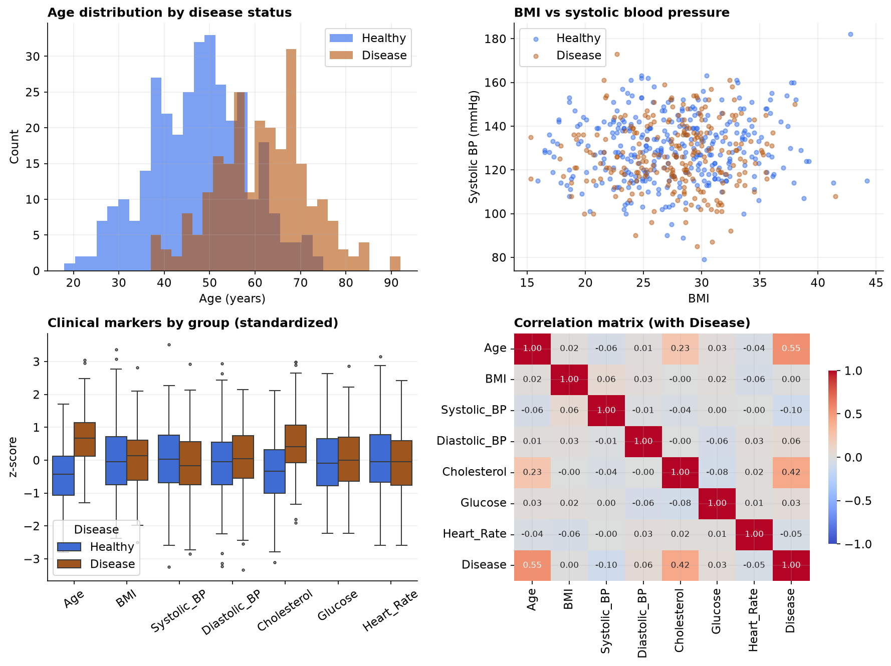

Screening Seven Clinical Markers for Association with Heart Disease
Effect sizes under multiple-comparison control.
Capstone Technical Report · Statistics, Data Science and AI: A Visual Handbook · John Fisher
Keywords: Keywords: multiple comparisons; family-wise error rate; Bonferroni; Holm; effect size; confounding; observational study.
1. Introduction
Screening a panel of markers against a single outcome is efficient but statistically hazardous: each test carries its own type-I error probability, so the chance that at least one null marker is declared significant grows rapidly with the number of tests. For k independent tests at level alpha, the family-wise error rate (FWER) is 1 - (1 - alpha)^k, which for alpha = 0.05 and k = 7 equals about 30%. This report screens seven markers for association with heart-disease status and applies multiplicity control so that the reported discoveries are credible rather than artifacts of volume.
2. Data
The observational cohort records seven continuous markers and a binary heart-disease diagnosis per patient. After removing duplicate records and values outside clinically plausible ranges, and dropping records with missing markers, n = 575 patients remained (242 with disease, 333 healthy). Marker ranges used for cleaning were: Age 18–100; BMI 12–70; Systolic_BP 70–250; Diastolic_BP 40–150; Cholesterol 80–450; Glucose 50–400; Heart_Rate 35–200.
| Step | Rule | Removed | Remaining |
|---|---|---|---|
| Raw export | — | — | 603 |
| De-duplication | drop duplicate rows | 3 | 600 |
| Range + missing | plausible ranges; complete markers | 25 | 575 |
3. Methods
For each marker, the two groups (disease vs healthy) were compared by Welch's unequal-variance t-test; at several hundred observations per group the Central Limit Theorem renders this robust. Effect sizes were Cohen's d (pooled) and the point-biserial correlation between the binary outcome and each marker, which is algebraically equivalent to the t-based comparison and quantifies association on the correlation scale. The seven resulting p-values were adjusted for multiplicity by the Bonferroni procedure (reject if p < alpha/k) and by Holm's step-down procedure, which controls the FWER with greater power. Analyses used SciPy and statsmodels in Python 3.
4. Results
The clinical dashboard (Figure 1) previews the result: only age and cholesterol visibly separate the groups, and in the correlation matrix the Disease row shows Age at 0.55 and Cholesterol at 0.42 against near-zero values elsewhere. Table 2 gives the formal screen, ranked by effect size.

| Marker | Healthy | Disease | Cohen's d | r_pb | p (raw) | Verdict |
|---|---|---|---|---|---|---|
| Age | 47.5 | 61.7 | 1.34 | 0.55 | <0.001 | survives (Holm & Bonferroni) |
| Cholesterol | 197.8 | 234.6 | 0.95 | 0.42 | <0.001 | survives (Holm & Bonferroni) |
| Systolic_BP | 129.7 | 126.7 | 0.20 | -0.10 | 0.021 | raw-significant; rejected by correction |
| Diastolic_BP | 82.0 | 83.2 | 0.11 | 0.06 | 0.174 | not significant |
| Heart_Rate | 74.9 | 73.8 | 0.11 | -0.05 | 0.208 | not significant |
| Glucose | 97.4 | 98.8 | 0.06 | 0.03 | 0.443 | not significant |
| BMI | 27.6 | 27.6 | 0.01 | 0.00 | 0.919 | not significant |
Two markers, Age and Cholesterol, are associated with disease by any standard: both have large effect sizes and p-values many orders of magnitude below even the Bonferroni threshold. Systolic blood pressure is the instructive case: its raw p-value (0.021) falls under 0.05, but its effect size is negligible (d = 0.20) and it does not survive either correction. It is the false positive anticipated by the 30% family-wise error rate, and it is a clinically seductive one, since blood pressure is a marker an investigator expects to matter. The remaining four markers are not significant even before correction. Figure 2 summarizes the outcome on the effect-size scale.

5. The correction expressed as interval widths
| Marker | Cohen's d | 95% CI | 99.29% CI (adjusted) | Verdict |
|---|---|---|---|---|
| Age | +1.34 | +1.16 to +1.52 | +1.09 to +1.59 | survives |
| Cholesterol | +0.95 | +0.78 to +1.12 | +0.71 to +1.19 | survives |
| Systolic BP | −0.20 | −0.36 to −0.03 | −0.42 to +0.03 | crosses zero |
| Diastolic BP | +0.11 | −0.05 to +0.28 | −0.11 to +0.34 | never significant |
| Glucose | +0.06 | −0.10 to +0.23 | −0.16 to +0.29 | never significant |
| Heart rate | −0.10 | −0.27 to +0.06 | −0.33 to +0.12 | never significant |
| BMI | +0.01 | −0.16 to +0.17 | −0.22 to +0.24 | never significant |
Multiplicity corrections are conventionally presented as an adjustment to the rejection threshold. The equivalent and more transparent presentation is as an adjustment to interval width: controlling the family-wise error rate at 5 percent across seven comparisons requires each individual interval to be constructed at the 99.29 percent level.
Systolic blood pressure is the informative case. Its conventional interval excludes zero and its adjusted interval does not, which is precisely the decision reached by the step-down procedure, expressed in a form that requires no familiarity with the procedure to read. Age and cholesterol are unaffected by the widening, their intervals remaining remote from zero under either construction. That insensitivity is the signature of a robust finding.
Reporting both interval widths is recommended in preference to reporting adjusted p-values alone, since it communicates the magnitude of the estimate and the stringency of the evidential standard simultaneously.
6. Discussion
The analysis makes two methodological points concrete. First, multiplicity control is not a formality: without it, this seven-marker screen would have reported blood pressure as a finding, a false positive with a trivial effect size. Reporting the effect size alongside the corrected p-value provides a second, independent guard against over-interpretation. Second, and more fundamentally, this is an observational cohort, so the surviving associations are not causal. Age is a canonical confounder here: it is associated with disease and with several markers (notably cholesterol), so a marginal association between cholesterol and disease may be partly or wholly attributable to age. Disentangling a marker's independent contribution requires a multivariable model that adjusts for age (e.g., logistic regression), not a battery of univariate tests. The marginal screen is properly read as hypothesis-generating.
When the number of tests is large, FWER control by Bonferroni becomes conservative and power suffers; in such settings the false discovery rate (Benjamini-Hochberg) is the standard alternative, bounding the expected proportion of false discoveries rather than the probability of any. With only 7 tests the FWER approach adopted here is appropriate and transparent.
7. Conclusion
Of seven markers screened against heart-disease status, only Age (d = 1.34) and Cholesterol (d = 0.95) are defensibly associated after controlling the family-wise error rate; systolic blood pressure was a correction-rejected false positive. Given the observational design and the confounding role of age, a covariate-adjusted model is the appropriate confirmatory step.
References
- Welch, B. L. (1947). The generalization of Student's problem when several different population variances are involved. Biometrika, 34(1–2), 28–35.
- Bonferroni, C. E. (1936). Teoria statistica delle classi e calcolo delle probabilita. Pubbl. R. Ist. Sup. Sci. Econ. Comm. Firenze, 8, 3–62.
- Holm, S. (1979). A simple sequentially rejective multiple test procedure. Scandinavian Journal of Statistics, 6(2), 65–70.
- Benjamini, Y., & Hochberg, Y. (1995). Controlling the false discovery rate. Journal of the Royal Statistical Society B, 57(1), 289–300.
- Cohen, J. (1988). Statistical Power Analysis for the Behavioral Sciences (2nd ed.). Lawrence Erlbaum.
- Rothman, K. J. (1990). No adjustments are needed for multiple comparisons. Epidemiology, 1(1), 43–46.
Reproducibility
The dataset (capstone-heart-disease-markers.xlsx) and an executable notebook reproducing every statistic, table, and figure accompany the chapter. Analyses use NumPy, pandas, SciPy, statsmodels, seaborn, and Matplotlib.